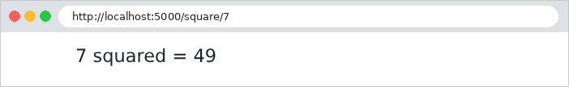

7. 请求的生命周期
从请求到达到动作被执行之间，会涉及几类对象，每一类都有特定的职责。我们已经遇到过其中一些：静态文件处理器、[LocaleResolver] （第 5 章）、示例 23 中的过滤器、参数解析器（[HandlerMethodArgumentResolver]，示例 12），以及 [@ControllerAdvice]（示例 15）。现在是时候把它们放在一起，理清它们彼此的关系了。
这里有两层。第一层由服务器（[Tomcat]）和 Servlet 标准（[Java]）组成：Servlet 是处理（HTTP）请求的对象，而 Servlet 过滤器 可以包裹在它的外面，在它之前和之后执行操作。第二层是 [Spring MVC] 本身，它其实就是 一个 Servlet，即 [DispatcherServlet]：它选择动作、绑定其参数、执行它，然后渲染视图。在其内部，拦截器 可以在动作之前和之后执行操作。[ASP.NET Core] 有中间件和过滤器（MVC），而 [Spring] 有 Servlet 过滤器和拦截器。案例研究使用了其中的大部分对象：

对象 | 职责 | 在案例研究中 |
Servlet 过滤器 | 准备请求；不了解动作 | [Spring Security] 过滤器：读取令牌；未登录时拒绝访问 |
拦截器 | 在动作之前和之后执行的代码；了解动作 | （未使用：角色由 [@PreAuthorize] 验证，参见第 8 章，而 [CommonModel] 负责补全模型） |
参数解析器 | 提供动作参数的值 | 来自 [Spring MVC] 的那些：表单、验证、[BindingResult] |
[@ExceptionHandler] | 将异常转换为响应 | 无效会话：返回登录页面 |
[/error] 错误页面 | 生成错误响应页面 | [ErrorController]：400、403、404、500 页面 |
7.1. 示例 24：请求处理的步骤
示例 24 有一个计算数字平方的函数，以及每种类型的一个对象。每个对象都会向控制台写入一行：这显示了它们的执行顺序。列出的编号与图中的编号相对应。
| 24-lifecycle/
├── src/main/java/example24/
│ ├── config/
│ │ └── WebConfig.java
│ ├── controllers/
│ │ ├── CalcController.java
│ │ └── ErrorPageController.java
│ ├── filters/
│ │ ├── Block.java
│ │ ├── BlockInterceptor.java
│ │ ├── Timing.java
│ │ ├── TimingInterceptor.java
│ │ ├── IntegerParam.java
│ │ ├── IntegerParamResolver.java
│ │ ├── LoggerFilter.java
│ │ └── ErrorPageAdvice.java
│ └── Example24Application.java
├── src/main/resources/
│ ├── templates/
│ │ ├── calc/
│ │ │ └── result.html
│ │ ├── error.html
│ │ └── layout.html
│ └── application.properties
└── pom.xml
|
文件 [pom.xml]、[application.properties]、以及 [Example24Application.java] 来自之前的示例。
7.1.1. Servlet 过滤器
文件 [filters/LoggerFilter.java]：
| package example24.filters;
import java.io.IOException;
import org.springframework.stereotype.Component;
import org.springframework.web.filter.OncePerRequestFilter;
import jakarta.servlet.FilterChain;
import jakarta.servlet.ServletException;
import jakarta.servlet.http.HttpServletRequest;
import jakarta.servlet.http.HttpServletResponse;
// 一个 Servlet 过滤器：它在 Spring MVC 之前看到每个请求经过，在
// 之后看到响应。@Component：Spring Boot 将其添加到过滤器链中。
@Component
public class LoggerFilter extends OncePerRequestFilter {
@Override
protected void doFilterInternal(HttpServletRequest request, HttpServletResponse response, FilterChain next)
throws ServletException, IOException {
String requestLine = request.getMethod() + " " + request.getRequestURI()
+ (request.getQueryString() == null ? "" : "?" + request.getQueryString());
System.out.println();
System.out.println("--- " + requestLine);
System.out.println("1. filter (before)");
next.doFilter(request, response); // 其余的一切：Spring MVC、操作、视图
System.out.println("7. filter (after: code " + response.getStatus() + ")");
}
}
|
- 第 15–16 行：一个过滤器，与示例 23 中的类似。[OncePerRequestFilter] 是 [Spring] 的一个子类，它实现了 Servlet 标准的 [Filter] 接口，确保每个请求只执行一次；我们重写其 [doFilterInternal] 方法，每个请求都会调用它。借助 [@Component]，[Spring Boot] 将该过滤器添加到服务器的过滤器链中；
- 第 21–22 行：方法、路径和请求参数。过滤器对将处理该请求的动作一无所知：它在 [Spring MVC] 之前介入，而 Spring MVC 尚未选定动作；
- 第 26 行：过滤器把请求传递给链的其余部分（其他过滤器，然后是 [DispatcherServlet]），并等待它完成。如果它不调用这一步，请求就会在此终止（此时过滤器必须自己生成响应）。放在这个调用之前的代码在去程中执行；放在它之后的代码在返程中执行：过滤器“包裹”了其他所有内容；
- 第 27 行：在返回路径上，过滤器可以看到响应状态码。
7.1.2. 拦截器
拦截器应用于应用程序中的所有动作（参见下面的 [WebConfig] ）。为了确保它只作用于某些动作，我们用拦截器会查找的自定义注解 来标记这些动作。文件 [filters/Block.java]：
| package example24.filters;
import java.lang.annotation.ElementType;
import java.lang.annotation.Retention;
import java.lang.annotation.RetentionPolicy;
import java.lang.annotation.Target;
// 标记控制器的注解；BlockInterceptor 会查找它
@Target(ElementType.TYPE)
@Retention(RetentionPolicy.RUNTIME)
public @interface Block {
}
|
- 第 11 行：[@interface] 声明一个注解。该注解没有参数：仅凭它的存在就足够了；
- 第 9 行：[@Target] 指定注解可以应用的位置：这里是应用在类型（类）上；
- 第 10 行：[@Retention(RetentionPolicy.RUNTIME)]：注解会保留在编译后的代码中，并在运行期间仍可读取。如果没有它，编译器会将其移除，拦截器就找不到它。
文件 [filters/Timing.java] 除名称外完全相同。文件 [filters/BlockInterceptor.java]：
| package example24.filters;
import org.springframework.web.method.HandlerMethod;
import org.springframework.web.servlet.HandlerInterceptor;
import jakarta.servlet.http.HttpServletRequest;
import jakarta.servlet.http.HttpServletResponse;
// 一个拦截器：它在 Spring MVC 内部运行，此时操作已经选定。
// 这个拦截器决定该操作是否可以执行。
public class BlockInterceptor implements HandlerInterceptor {
// preHandle：在操作之前；返回 false 会在此停止处理
@Override
public boolean preHandle(HttpServletRequest request, HttpServletResponse response, Object handler)
throws Exception {
// handler：将处理该请求的对象；对于操作，是一个 HandlerMethod。
// 因此，与过滤器不同，拦截器知道目标操作。
if (handler instanceof HandlerMethod action && action.getBeanType().isAnnotationPresent(Block.class)) {
System.out.println("2. Block interceptor (targeted action: " + action.getMethod().getName() + ")");
if (request.getParameter("block") != null) {
// 一个 403 错误响应（拒绝访问），不做其他任何事
response.sendError(HttpServletResponse.SC_FORBIDDEN);
return false; // 既没有绑定，也没有操作
}
}
return true;
}
}
|
- 第 11 行：拦截器实现 [HandlerInterceptor] 接口，该接口来自 [Spring MVC]。它的三个方法——[preHandle]、[postHandle]和 [afterCompletion]——都有什么也不做的默认实现：我们只重写需要的方法；
- 第 15 行：[preHandle] 在动作之前执行，甚至在其参数被绑定之前。它的参数 [handler], 是将要处理请求的对象：对于动作，是一个 [HandlerMethod] 对象，它描述控制器的方法；
- 第 19 行：与过滤器不同，拦截器因此知道它所针对的是哪个动作。[handler instanceof HandlerMethod action] 检查对象的类型，如果匹配，就把它存入变量 [action]，该变量具有正确的类型。[getBeanType()] 给出控制器的类；[isAnnotationPresent(Block.class)] 指示它是否带有注解 [@Block]；
- 第 21–25 行：拦截器通过返回 [false] 来拒绝请求：后续的处理过程（绑定、动作、视图）都不会执行。此时它必须自己生成响应：这里，[sendError(403)] 创建一个“拒绝访问”的错误响应，服务器将为它生成页面（我们稍后会看到如何生成）；
- 第 27 行：[true]：请求继续进行。
文件 [filters/TimingInterceptor.java]：
| package example24.filters;
import org.springframework.web.method.HandlerMethod;
import org.springframework.web.servlet.HandlerInterceptor;
import org.springframework.web.servlet.ModelAndView;
import jakarta.servlet.http.HttpServletRequest;
import jakarta.servlet.http.HttpServletResponse;
// 第二个拦截器：它测量处理的持续时间
public class TimingInterceptor implements HandlerInterceptor {
private static final String KEY = "timing";
private static boolean concerned(Object handler) {
return handler instanceof HandlerMethod action && action.getBeanType().isAnnotationPresent(Timing.class);
}
// 在操作之前（以及其参数绑定之前）
@Override
public boolean preHandle(HttpServletRequest request, HttpServletResponse response, Object handler) {
if (concerned(handler)) {
System.out.println("3. Timing interceptor (before)");
// 开始时间，存放在请求属性中（请求作用域）
request.setAttribute(KEY, System.nanoTime());
}
return true;
}
// 在操作之后、视图之前；如果操作抛出了异常，则不会被调用
@Override
public void postHandle(HttpServletRequest request, HttpServletResponse response, Object handler,
ModelAndView mav) {
if (concerned(handler)) {
System.out.println("6a. Timing interceptor (after the action; chosen view: "
+ (mav == null ? null : mav.getViewName()) + ")");
}
}
// 在最后，视图之后；始终会被调用，并带有可能出现的异常
@Override
public void afterCompletion(HttpServletRequest request, HttpServletResponse response, Object handler,
Exception exception) {
if (concerned(handler) && request.getAttribute(KEY) instanceof Long start) {
long ms = (System.nanoTime() - start) / 1_000_000;
String outcome = exception == null ? "" : ", exception " + exception.getClass().getSimpleName();
System.out.println("6b. Timing interceptor (end, " + ms + " ms" + outcome + ")");
}
}
}
|
- 第 15–17 行：该拦截器只关心用 [@Timing] 注解的控制器的动作；
- 第 21–28 行：在动作之前，记录开始时间（[System.nanoTime()]，单位为纳秒），并将其存储在请求属性中（请求作用域；参见第 6 章）；
- 第 32–38 行：[postHandle] 在动作之后、视图之前运行。它接收动作生成的 [ModelAndView] （视图名称和模型），并且仍可修改它。如果动作抛出了异常，则不会调用它；
- 第 42–49 行：[afterCompletion] 在最后运行，在视图之后，无论一切是否顺利：这是释放资源或测量执行时间的合适位置。它的最后一个参数是异常（如果有的话）。第 44 行：[instanceof Long start] 一步完成对属性值的检查和转换。
7.1.3. 参数绑定
文件 [filters/IntegerParam.java]：
| package example24.filters;
import java.lang.annotation.ElementType;
import java.lang.annotation.Retention;
import java.lang.annotation.RetentionPolicy;
import java.lang.annotation.Target;
// 一个整数参数，由 IntegerParamResolver 从路径中读取（参见示例 12）
@Target(ElementType.PARAMETER)
@Retention(RetentionPolicy.RUNTIME)
public @interface IntegerParam {
}
|
一个注解，这次用在参数上（第 9 行）。文件 [filters/IntegerParamResolver.java]：
| package example24.filters;
import java.util.Map;
import org.springframework.core.MethodParameter;
import org.springframework.web.bind.support.WebDataBinderFactory;
import org.springframework.web.context.request.NativeWebRequest;
import org.springframework.web.context.request.RequestAttributes;
import org.springframework.web.method.support.HandlerMethodArgumentResolver;
import org.springframework.web.method.support.ModelAndViewContainer;
import org.springframework.web.servlet.HandlerMapping;
// @IntegerParam Integer 参数的绑定：同名的路径变量，
// 转换为整数，如果不是整数则为 null
public class IntegerParamResolver implements HandlerMethodArgumentResolver {
@Override
public boolean supportsParameter(MethodParameter parameter) {
return parameter.hasParameterAnnotation(IntegerParam.class) && parameter.getParameterType() == Integer.class;
}
@Override
public Object resolveArgument(MethodParameter parameter, ModelAndViewContainer mavContainer,
NativeWebRequest request, WebDataBinderFactory binderFactory) {
// 路径变量（{n} 等），由 Spring 存放在请求属性中
@SuppressWarnings("unchecked")
Map<String, String> variables = (Map<String, String>) request.getAttribute(
HandlerMapping.URI_TEMPLATE_VARIABLES_ATTRIBUTE, RequestAttributes.SCOPE_REQUEST);
String value = variables == null ? null : variables.get(parameter.getParameterName());
System.out.println("4. parameter binding (received value: \"" + value + "\")");
try {
return Integer.valueOf(value);
} catch (NumberFormatException e) {
return null; // 由操作来决定
}
}
}
|
一个参数解析器，与示例 12 中的类似：
- 第 18–20 行：它处理类型为 [Integer] 且带有 [@IntegerParam] 注解的参数；
- 第 27–28 行：[Spring MVC] 在选择动作时已经解析了路径（[/square/{n}]）；它已经把路径变量以字典 [name -> value] 的形式存储在请求属性中；
- 第 29 行：以参数命名的变量的值（[n]）；
- 第 31–35 行：转换为整数后的值，如果它不是整数，则为 [null] 。无效的值不会终止任何流程：由动作来决定。
7.1.4. 异常处理
文件 [filters/ErrorPageAdvice.java]：
| package example24.filters;
import org.springframework.http.HttpStatus;
import org.springframework.web.bind.annotation.ControllerAdvice;
import org.springframework.web.bind.annotation.ExceptionHandler;
import org.springframework.web.servlet.ModelAndView;
// @ControllerAdvice + @ExceptionHandler：将任何操作抛出的异常
// 转换为响应（此处适用于整个应用）
@ControllerAdvice
public class ErrorPageAdvice {
// 仅处理 IllegalStateException：其他异常继续按其原有路径传播
@ExceptionHandler(IllegalStateException.class)
public ModelAndView error(IllegalStateException e) {
System.out.println("x. @ExceptionHandler (" + e.getClass().getSimpleName() + ": " + e.getMessage() + ")");
// 用我们的 [error] 视图和 500 状态码，取代默认的错误页面
ModelAndView mav = new ModelAndView("error", HttpStatus.INTERNAL_SERVER_ERROR);
mav.addObject("code", 500);
return mav;
}
}
|
- 第 10 行：[@ControllerAdvice] 使该类成为所有控制器的补充（参见示例 15）；
- 第 14–15 行：带有 [@ExceptionHandler] 的方法会在动作抛出指定类型的异常时被调用，这里是 [IllegalStateException] （或其派生类型）。如果放在控制器中，它只适用于该控制器的动作；放在 [@ControllerAdvice] 中，则适用于整个应用程序。它接收该异常作为参数，并像动作一样生成响应；
- 第 18–20 行：不使用默认的错误页面，而是使用视图 [error]，状态码为 500。[ModelAndView] 把动作通常分两部分返回的内容合在一起：视图名称和模型（这里还有状态码）。
其他异常不在这里讨论：我们稍后会看到它们的处理方式。
7.1.5. 配置
[config/WebConfig.java] 文件：
| package example24.config;
import java.util.List;
import org.springframework.context.annotation.Configuration;
import org.springframework.web.method.support.HandlerMethodArgumentResolver;
import org.springframework.web.servlet.config.annotation.InterceptorRegistry;
import org.springframework.web.servlet.config.annotation.ResourceHandlerRegistry;
import org.springframework.web.servlet.config.annotation.WebMvcConfigurer;
import example24.filters.BlockInterceptor;
import example24.filters.TimingInterceptor;
import example24.filters.IntegerParamResolver;
// Spring MVC 的配置，已作补充
@Configuration
public class WebConfig implements WebMvcConfigurer {
// 各示例共享的 Bootstrap：examples/common/bootstrap 文件夹
// 通过 URL /bootstrap/... 提供
@Override
public void addResourceHandlers(ResourceHandlerRegistry registry) {
registry.addResourceHandler("/bootstrap/**")
// "file:"：磁盘上的一个文件夹，相对于当前文件夹。尝试
// 两次：从示例所在文件夹启动，或从 [examples] 启动
.addResourceLocations("file:../common/bootstrap/", "file:common/bootstrap/");
}
// 拦截器，按添加的顺序运行
@Override
public void addInterceptors(InterceptorRegistry registry) {
registry.addInterceptor(new BlockInterceptor());
registry.addInterceptor(new TimingInterceptor());
}
// @IntegerParam 参数的绑定
@Override
public void addArgumentResolvers(List<HandlerMethodArgumentResolver> resolvers) {
resolvers.add(new IntegerParamResolver());
}
}
|
- 第 30–34 行：拦截器被添加到 [Spring MVC] 中，它按添加的顺序执行拦截器（[postHandle]、[afterCompletion] 则按相反顺序）。它们适用于所有动作；也可以将其限制在某些路径上（[.addPathPatterns("/square/**")]），但我们的注解更加精确；
- 第 37–40 行：参数解析器，与示例 12 中相同。
7.1.6. 控制器和错误页面
文件 [controllers/CalcController.java]：
| package example24.controllers;
import org.springframework.http.HttpStatus;
import org.springframework.stereotype.Controller;
import org.springframework.ui.Model;
import org.springframework.web.bind.annotation.GetMapping;
import org.springframework.web.server.ResponseStatusException;
import example24.filters.Block;
import example24.filters.Timing;
import example24.filters.IntegerParam;
// 设置在控制器上的两个注解：拦截器会查找它们
@Block
@Timing
@Controller
public class CalcController {
@GetMapping("/square/{n}")
public String square(@IntegerParam Integer n, Model model) {
System.out.println("5. action square(" + n + ")");
if (n == null) {
// 一个 400 错误：参见 ErrorPageController
throw new ResponseStatusException(HttpStatus.BAD_REQUEST);
}
if (n == 13) {
throw new IllegalStateException("13 brings bad luck"); // 一个“预期外”的错误
}
model.addAttribute("n", n);
model.addAttribute("square", n * n);
return "calc/result";
}
}
|
- 第 14–15 行：拦截器所查找的两个注解；
- 第 20 行：[n] 参数，由我们的解析器提供；
- 第 22–25 行：无效的参数：400 错误（无效请求）。[ResponseStatusException] （参见示例 21）被 [Spring MVC] 转换为没有内容的错误响应；
- 第 26–28 行：一个“意外”错误，用来观察 [@ExceptionHandler] 的实际运行；
- 第 29–31 行：正常情况。文件 [templates/calc/result.html] 显示结果：
| <!doctype html>
<html xmlns:th="http://www.thymeleaf.org" th:replace="~{layout :: page(~{::main})}">
<body>
<main>
<h1 class="h4" th:text="|${n} squared = ${square}|">7 squared = 49</h1>
</main>
</body>
</html>
|
- 第 2 行：如预期，页面使用 [templates/layout.html] 模板（参见示例 15）：一个标题和 [Bootstrap]；
- 第 5 行：在两个竖线之间，[|...|] 是一个字符串，其中 [Thymeleaf] 会把每个 [${...}] 替换为它的值。
接下来是错误页面。当请求产生错误响应 （调用 [sendError]、抛出 [ResponseStatusException]、未知地址，或未处理的异常）时，服务器不会返回空响应：它会将请求转发到地址 [/error] ，以生成要返回的页面，并在此过程中把错误代码存储在请求属性中。[Spring Boot] 已经为这个地址提供了一个动作：到目前为止，生成 JSON 错误响应（对 [curl]）和“Whitelabel Error Page”（对浏览器）的就是它。文件 [controllers/ErrorPageController.java] 会替换它：
| package example24.controllers;
import org.springframework.boot.webmvc.error.ErrorController;
import org.springframework.stereotype.Controller;
import org.springframework.ui.Model;
import org.springframework.web.bind.annotation.RequestMapping;
import jakarta.servlet.RequestDispatcher;
import jakarta.servlet.http.HttpServletRequest;
import jakarta.servlet.http.HttpServletResponse;
// 应用的错误页面。错误响应（sendError、未处理的
// 异常）由服务器转发到 /error 地址；实现
// ErrorController 会用我们的页面取代 Spring Boot 的错误页面。
@Controller
public class ErrorPageController implements ErrorController {
// 不带 HTTP 方法的 @RequestMapping：所有方法（GET、POST 等）
@RequestMapping("/error")
public String error(HttpServletRequest request, HttpServletResponse response, Model model) {
// 原始错误代码，由服务器存放在请求属性中
Object code = request.getAttribute(RequestDispatcher.ERROR_STATUS_CODE);
int status = code instanceof Integer c ? c : 500;
System.out.println("8. error page " + status + " (request forwarded to /error)");
response.setStatus(status); // 页面保留错误代码
model.addAttribute("code", status);
return "error";
}
}
|
- 第 15–16 行：一个实现了来自 [ErrorController] 接口的控制器，该接口属于 [Spring Boot]。这个接口没有方法；它起标记的作用。一旦有 Bean 实现了它，[Spring Boot] 就会移除它自己的错误处理器；
- 第 19 行：[@RequestMapping] 没有指定方法（HTTP），因此接受所有方法：转发到 [/error] 的 POST 请求仍然是 POST 请求；
- 第 22–23 行：原始错误代码，由服务器存储在 [RequestDispatcher.ERROR_STATUS_CODE] 属性中。[code instanceof Integer c ? c : 500]：如果该属性是整数，则取它的值；否则取 500（例如，当直接请求 [/error] 时）；
- 第 25–27 行：页面保留错误代码，并将其传递给视图。
文件 [templates/error.html]：
| <!doctype html>
<!--/* 错误页面；其模型：错误代码 */-->
<html xmlns:th="http://www.thymeleaf.org" th:replace="~{layout :: page(~{::main})}">
<body>
<main>
<div class="alert alert-danger">
<h1 class="h4" th:text="|Error ${code}|">Error 500</h1>
<!--/* th:switch / th:case：与值相等的第一个 case；*：所有其他情况 */-->
<p class="mb-0" th:switch="${code}">
<span th:case="400">Bad request.</span>
<span th:case="403">Access denied.</span>
<span th:case="404">Page not found.</span>
<span th:case="*">Internal server error.</span>
</p>
</div>
</main>
</body>
</html>
|
- 第 9–14 行：[th:switch] 和 [th:case]：只保留第一个标签 [th:case]，其值等于 [th:switch] 的值；[*] 对应所有其他情况。该视图同时用于 [ErrorPageController] and [ErrorPageAdvice]。
7.1.7. 运行
五个请求：一次正常的计算（http://localhost:5000/square/7）、一个无效的参数（[/square/abc]）、一个被拦截器阻止的请求（[/square/7?block=1]）、一个意外错误（[/square/13]）以及一个未知地址（[/unknown]）。服务器控制台：
| --- GET /square/7
1. filter (before)
2. Block interceptor (targeted action: square)
3. Timing interceptor (before)
4. parameter binding (received value: "7")
5. action square(7)
6a. Timing interceptor (after the action; chosen view: calc/result)
6b. Timing interceptor (end, 5 ms)
7. filter (after: code 200)
--- GET /square/abc
1. filter (before)
2. Block interceptor (targeted action: square)
3. Timing interceptor (before)
4. parameter binding (received value: "abc")
5. action square(null)
2026-09-25T18:48:16.146+02:00 WARN 23271 --- [nio-5000-exec-3] .w.s.m.a.ResponseStatusExceptionResolver : Resolved [org.springframework.web.server.ResponseStatusException: 400 BAD_REQUEST]
6b. Timing interceptor (end, 1 ms)
7. filter (after: code 400)
8. error page 400 (request forwarded to /error)
--- GET /square/7?block=1
1. filter (before)
2. Block interceptor (targeted action: square)
7. filter (after: code 403)
8. error page 403 (request forwarded to /error)
--- GET /square/13
1. filter (before)
2. Block interceptor (targeted action: square)
3. Timing interceptor (before)
4. parameter binding (received value: "13")
5. action square(13)
x. @ExceptionHandler (IllegalStateException: 13 brings bad luck)
2026-09-25T18:48:16.174+02:00 WARN 23271 --- [nio-5000-exec-5] .m.m.a.ExceptionHandlerExceptionResolver : Resolved [java.lang.IllegalStateException: 13 brings bad luck]
6b. Timing interceptor (end, 5 ms)
7. filter (after: code 500)
--- GET /unknown
1. filter (before)
7. filter (after: code 404)
8. error page 404 (request forwarded to /error)
|
该日志显示：
- 正常情况下各步骤的顺序：过滤器，按添加顺序执行的拦截器（[preHandle]），参数绑定，动作，[postHandle] （视图尚未渲染），[afterCompletion] （视图已渲染），然后再次回到过滤器，此时它看到最终的响应代码；
- 拒绝请求的拦截器（[/square/7?block=1]）绕过了 [Spring MVC] 中的其他一切：没有第二个拦截器，没有绑定，没有动作；
- 无效的参数不会阻止动作的执行：由动作本身来决定（[square(null)]），在这里是通过抛出 [ResponseStatusException]。[Spring MVC] 把动作抛出的任何异常传递给一系列异常处理器 （[HandlerExceptionResolver]）；其中处理 [ResponseStatusException] 的那个会将其转换为 400 错误响应并记录日志（行 [WARN ... Resolved]）。由于动作抛出了异常，[postHandle] 不会被调用；[afterCompletion] 会被调用，但不带异常：异常已经被处理了；
- 来自 [/square/13] 的异常以同样的方式处理，由解析器查找 [@ExceptionHandler] 方法（步骤 x）。该方法生成一个状态码为 500 的完整页面：请求到此结束，不经过 [/error]；
- 没有内容的错误响应（400、403、404）通过传递给 [/error] （步骤 8）被转换为页面。请注意，这一步发生在 请求返回到过滤器（步骤 7）之后：[sendError] 只是将响应标记为错误，而在过滤器链完成之后，是服务器（[Tomcat]）将请求转发到 [/error]。这第二次处理不会经过我们的过滤器：[Spring Boot] 确实会为转发到 [/error] 的请求注册该过滤器，但 [OncePerRequestFilter] 会让它们直接通过而不执行（这是其默认行为，可以通过重新定义其方法 [shouldNotFilterErrorDispatch] 来改变）。不过，它确实会经过拦截器，因为执行动作 [Spring MVC] 的是 [/error]；但是 [ErrorPageController] 不带有它们的注解，所以它们不会写入任何内容；
- 对于未知地址，没有匹配的动作：[Spring MVC] 于是把请求传递给静态文件处理器（[ResourceHttpRequestHandler]），它找不到任何文件，并抛出 [NoResourceFoundException] 异常，该异常被异常解析器转换为 404 错误响应（这次日志中没有 [WARN] 行）。拦截器确实被调用了，但它们收到的 [handler] 不是动作（[HandlerMethod]）：它们没有写入任何内容。
得到的页面：



让我们检查错误代码是否被保留：
| curl -i "http://localhost:5000/square/7?block=1"
|
| HTTP/1.1 403
Content-Type: text/html;charset=UTF-8
<!doctype html>
<html lang="en">
<head>
<meta charset="utf-8">
<title>Lifecycle</title>
<link rel="stylesheet" href="/bootstrap/css/bootstrap.min.css">
</head>
<body>
<div class="container py-3">
<main>
<div class="alert alert-danger">
<h1 class="h4">Error 403</h1>
<p class="mb-0">
<span>Access denied.</span>
</p>
</div>
</main>
</div>
</body>
</html>
|
页面上只出现由 [th:switch] 所选中的分支中的 [span] 。
案例研究结合了这些机制：一个用于 400、403、404 和 500 页面的 [ErrorController] 处理器，服务器会把所有错误响应都转发给它，包括那些无人处理的异常所产生的错误响应（500 页面，不带调用栈）；以及一个针对特定情况的 [@ExceptionHandler] （[web/HtmlExceptionHandler.java]）：会话无效（账户在登录后被删除）时不显示错误页面，而是重定向到登录页面。